Опыт Николаева и Дейны с цилиндрами
А.Ю.Дроздов
14.08.2019-14.06.2020
Рассмотрим опыт Николаева и Дейны с взаимодействием двух соосно расположенных цилиндров со сверлением, намагничиваемых путём пропускания тока по проводу проходящему внутри сверлений.
Сам опыт представлен С.А. Дейной в ролике "Магниты Второе магнитное поле Николаева 4. Текстовое писание ролика здесь.
Качественно картину взаимодействия цилиндров между собой С.А. Дейна представил в документе на странице 12 "Силовой взаимодействие дисков между собой и векторное магнитное поле".
В данной же работе я попытаюсь провести не качественный, а количественный расчёт взаимодействия цилиндров.
Согласно курсу теории электричества Тамма, раздел Магнетики, параграф 60, п.3, "для построения теории магнетиков ... среднее по физически бесконечно малому объёму значение плотности молекулярных токов 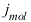 . Среднее значение тока взятое по всему объёму замкнутых токов равно нулю."
Но для тороидального намагниченного цилиндра ввиду того что кольцевые молекулярные токи в проекции образуют "ёлочку" при выделении физичеки бесконечно малого объёма можно видеть, что среднее значение молекулярных токов не равно нулю.
Примем, что ввиду однородной намагниченности поверхностная составляющая среднего значения молекулярных токов на поверхности циркулярно намагниченного цилиндра с соосным сверлением постоянна и имеет значение 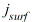 . Интегрируя поверхностный ток по внешней поверхности цилиндра получим 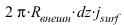 Интегрируя поверхностный ток по внутренней поверхности сверлений получим 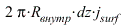 Интегральное значение среднего молекулярного поверхностного тока на внешней поверхности цилидра больше интегрального значения среднего молекулярного поверхностного тока на поверхности внутреннего сверления в 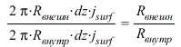 раз.
Расмотрим поверхностный ток на торцевой поверхности цилиндра. Интегральное значение поверхностного тока в пределах воображаемого на торцевой поверхности кольцевой полоски ограниченной окружностями радиусов R-dR/2 и R+dR/2 равное 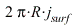 не постоянно, а пропорционально радиусу R. Если взять на одной и той же торцевой поверхности две соседние кольцевые полоски ограниченные окружностями радиусов 1) R-dR и R, 2) R и R+dR то интегральный ток в них будет равен соответственно  и 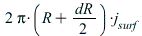 Разница составит 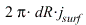 И эта разница должна замыкаться объёмным током. Таким образом в цилиндрическом слоё объёма намагниченного цилиндра заключённом между воображаемыми цилиндрическими поверхностями радиусов R-dR/2 и R+dR/2 заключён интегральный средний по объёму молекулярных токов ток равный Для получения плотности среднего по объёму молекулярного тока разделим на объём заключённый между воображаемыми цилиндрическими поверхностями. Таким образом получим 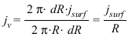
и 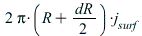 Разница составит 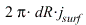 И эта разница должна замыкаться объёмным током. Таким образом в цилиндрическом слоё объёма намагниченного цилиндра заключённом между воображаемыми цилиндрическими поверхностями радиусов R-dR/2 и R+dR/2 заключён интегральный средний по объёму молекулярных токов ток равный Для получения плотности среднего по объёму молекулярного тока разделим на объём заключённый между воображаемыми цилиндрическими поверхностями. Таким образом получим 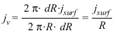
На границе намагниченных магнетиков вектор плотности поверхностных токов пропорционален векторному произведения вектора нормали на вектор намагничивания 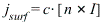
Вектор намагничивания I определяется как магнитный момент молекулярных токов рассчитанный на единицу объёма 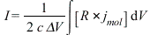
Если цилиндр имеет равномерную циркулярную намагниченность, то плотность поверхностных токов всюду одинакова.
Рассчитаем теперь согласно классической электродинамике силу взаимодействия между цилиндрами в опыте Дейны как градиент потенциальной функции взаимодействия токов согласно Тамм, Основы теории электричества, 1957, параграф 51 "Пондемоторное взаимодействие токов"
Примем следующие обозначения: z1__max - координата правого края левого цилиндра z2__min - координата левого края правого цилиндра, dz длина цилиндров по оси z (высота цилинров), r__min - радиус внутреннего сверления в цилиндрах, r__max - радиус внешей поверхности цилиндров
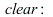
assume(r__min, 'real', r__min > 0, r__max, 'real', r__max > r_min, z1__max, 'real', z1__max < 0, dz, 'real', dz > 0, z2__min, 'real', z2__min > 0);
Потенциальная функция взаимодействия объёмных токов (компиляция формул 51.6 и 52.5 из курса Тамма)
Uvv := -1/(c^2)*Int(j__surf__1*j__surf__2 /
sqrt((r__1*cos(varphi__1)-r__2*cos(varphi__2))^2+(r__1*sin(varphi__1)-r__2*sin(varphi__2))^2+(z__1-z__2)^2),
[z__1 = z1__max-dz .. z1__max, varphi__1 = 0 .. 2*Pi, r__1=r__min..r__max,
z__2 = z2__min .. z2__min + dz, varphi__2 = 0 .. 2*Pi, r__2=r__min..r__max]):
Потенциальная функция взаимодействия поверхностных токов на поверхностях цилиндров
Uss := -1/(c^2)*Int(j__surf__1*j__surf__2 * R__1 * R__2 /
sqrt((R__1*cos(varphi__1)-R__2*cos(varphi__2))^2+(R__1*sin(varphi__1)-R__2*sin(varphi__2))^2+(z__1-z__2)^2),
[z__1 = z1__max-dz .. z1__max, varphi__1 = 0 .. 2*Pi,
z__2 = z2__min .. z2__min + dz, varphi__2 = 0 .. 2*Pi]):
Суммарная потенциальная функция взаимодействия поверхностных токов на обоих поверхностях (внутренней и внешней) обоих цилиндров
Uss4 :=
+ subs(R__1=r__max, R__2=r__max, Uss)
+ subs(R__1=r__min, R__2=r__min, Uss)
- subs(R__1=r__max, R__2=r__min, Uss)
- subs(R__1=r__min, R__2=r__max, Uss):
Потенциальная функция взаимодействия поверхностных токов на торцах цилиндров
Utt := -1/(c^2)*Int(j__surf__1*j__surf__2*r__1*r__2*cos(varphi__1-varphi__2) /
sqrt(r__1^2 + r__2^2 - 2 * r__1 * r__2 * (cos(varphi__1) * cos(varphi__2) + sin(varphi__1)*sin(varphi__2)) + (z__1 - z__2)^2),
[varphi__1 = 0 .. 2*Pi, varphi__2 = 0 .. 2*Pi,
r__1 = r__min .. r__max, r__2 = r__min .. r__max]):
Суммарная потенциальная функция взаимодействия поверхностных токов на обоих торцах обоих цилиндров
Utt4 :=
- subs(z__1=z1__max, z__2=z2__min, Utt)
+ subs(z__1=z1__max-dz, z__2=z2__min, Utt)
+ subs(z__1=z1__max, z__2=z2__min+dz, Utt)
- subs(z__1=z1__max-dz, z__2=z2__min+dz, Utt):
Потенциальная функция взаимодействия объёмных токов с поверхностными
Взаимодействие поверхностного тока левого цилиндра с объёмным током правого
Usv := -1/(c^2) * Int(j__surf__1*j__surf__2 * R__s1 /
sqrt((R__s1*cos(varphi__s)-r__v*cos(varphi__v))^2+(R__s1*sin(varphi__s)-r__v*sin(varphi__v))^2+(z__s-z__v)^2),
[z__s = z1__max-dz .. z1__max, varphi__s = 0 .. 2*Pi,
z__v = z2__min .. z2__min+dz, varphi__v = 0 .. 2*Pi, r__v = r__min .. r__max]):
Взаимодействие поверхностного тока правого цилиндра с объёмным током левого
Uvs := -1/(c^2) * Int(j__surf__1*j__surf__2 * R__s2 /
sqrt((R__s2*cos(varphi__s)-r__v*cos(varphi__v))^2+(R__s2*sin(varphi__s)-r__v*sin(varphi__v))^2+(z__s-z__v)^2),
[z__s = z2__min .. z2__min+dz, varphi__s = 0 .. 2*Pi,
z__v = z1__max-dz .. z1__max, varphi__v = 0 .. 2*Pi, r__v = r__min .. r__max]):
Суммарная потенциальная функция взаимодействия объёмных токов с поверхностными
Uvs4 :=
- subs(R__s1=r__max, Usv)
+ subs(R__s1=r__min, Usv)
+ subs(R__s2=r__min, Uvs)
- subs(R__s2=r__max, Uvs) :
Полная потенциальная функция взаимодействия
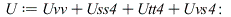
Сила действующая на цилиндры. С индексом 1 сила действующая на левый цилиндр, с индексом 2 сила действующая на правый
Полная сила
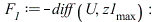
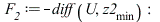
Сила взаимодействия объёмных токов
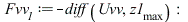
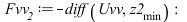
Сила взаимодействия поверхностных токов
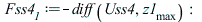
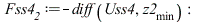
Сила взаимодействия торцевых токов
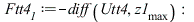
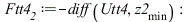
Сила взаимодействия поверхностных токов с объёмными
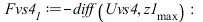
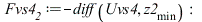
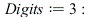
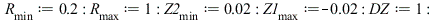
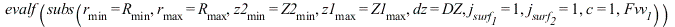
| 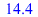 | (1) |
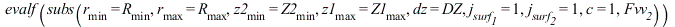
| 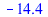 | (2) |

| 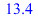 | (3) |
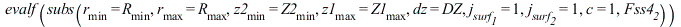
| 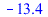 | (4) |
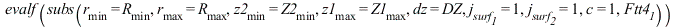
| 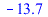 | (5) |
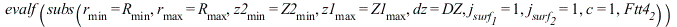
| 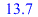 | (6) |
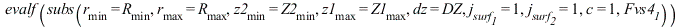
| 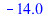 | (7) |

| 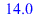 | (8) |
| (9) |
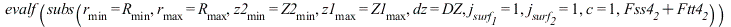
| 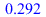 | (10) |

| 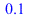 | (11) |

| (12) |
Итак мы видим, что расчёт основанный на представлениях классической электродинамики о пондемоторном взамодействии токов для опыта Дейны и Николаева с цилиндрами предсказывает притягивание цилиндров, что собственно и наблюдается на опыте.
Согласно Г.В. Николаеву (Непротиворечивая Электродинамика. Теория, эксперименты, парадоксы. Книга 1 1997, стр. 45, описание опыта 31)
"В рамках известных представлений сердечники взаимодействовать не должны (либо должны отталкиваться при наличии однонаправленных магнитных потоков рассеяния). Учет же взаимодействия индуцированных эквивалентных токов одного сердечника с неравным нулю векторным потенциалом другого устанавливает необходимость существования между сердечниками сил продольного притяжения."
Можно рассмотреть случай взаимодействия только лишь поверхностных токов на примере модели тороидальных катушек с током, намотанных на цилиндр с соосным сверлением. Однако в этом случае нужно для плотности поверхностных токов применять другие формулы, отличающиеся тем, что поверхностная плотность токов не будет постоянной по всей поверхности цилиндров.
Потенциальная функция взаимодействия токов проволочной обмотки на поверхностях цилиндров
Uwss := -1/(c^2)*Int(j__surf__1*j__surf__2 * r__min * r__min /
sqrt((R__1*cos(varphi__1)-R__2*cos(varphi__2))^2+(R__1*sin(varphi__1)-R__2*sin(varphi__2))^2+(z__1-z__2)^2),
[z__1 = z1__max-dz .. z1__max, varphi__1 = 0 .. 2*Pi,
z__2 = z2__min .. z2__min + dz, varphi__2 = 0 .. 2*Pi]):
Суммарная потенциальная функция взаимодействия токов проволочной обмотки на обоих поверхностях (внутренней и внешней) обоих цилиндров
Uwss4 :=
+ subs(R__1=r__max, R__2=r__max, Uwss)
+ subs(R__1=r__min, R__2=r__min, Uwss)
- subs(R__1=r__max, R__2=r__min, Uwss)
- subs(R__1=r__min, R__2=r__max, Uwss):
Потенциальная функция взаимодействия токов проволочной обмотки на торцах цилиндров
Uwtt := -1/(c^2)*Int(j__surf__1*j__surf__2*r__min*r__min*cos(varphi__1-varphi__2) /
sqrt(r__1^2 + r__2^2 - 2 * r__1 * r__2 * (cos(varphi__1) * cos(varphi__2) + sin(varphi__1)*sin(varphi__2)) + (z__1 - z__2)^2),
[varphi__1 = 0 .. 2*Pi, varphi__2 = 0 .. 2*Pi,
r__1 = r__min .. r__max, r__2 = r__min .. r__max]):
Суммарная потенциальная функция взаимодействия токов проволочной обмотки на обоих торцах обоих цилиндров
Uwtt4 :=
- subs(z__1=z1__max, z__2=z2__min, Uwtt)
+ subs(z__1=z1__max-dz, z__2=z2__min, Uwtt)
+ subs(z__1=z1__max, z__2=z2__min+dz, Uwtt)
- subs(z__1=z1__max-dz, z__2=z2__min+dz, Uwtt):
Полная потенциальная функция взаимодействия токов проволочной обмотки
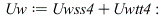
Сила действующая на цилиндры. С индексом 1 сила действующая на левый цилиндр, с индексом 2 сила действующая на правый
Полная сила
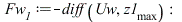

Сила взаимодействия поверхностных токов проволочной обмотки
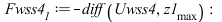
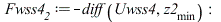
Сила взаимодействия торцевых токов проволочной обмотки
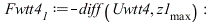
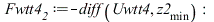
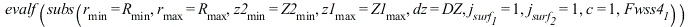
| 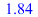 | (13) |
| (14) |
| (15) |
| (16) |
| (17) |
| (18) |
Таким образом расчёт взаимодействия цилиндров с помощью градиента потенциальной функции взаимодействия цилиндров показывает их притяжение. как с учетом объёмных токов так и для упрощённого случая учёта только лишь поверхностных токов, что собственно и наблюдается в опыте С.А.Дейны